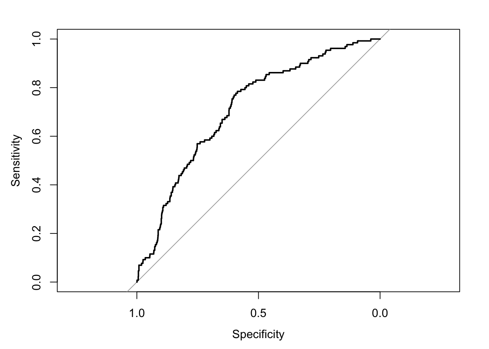

Revisit the fundamental difference between two aspects of modelling: prediction vs explanation
Be familiar with the concept of training and validation datasets
Discover the different ways to validate a prediction model, particularly in logistic regression
Learn about optimism bias and how it can be removed
Discover how calibration plots are built and why they are important
Revisit variety of ways in which multiple logistic regression models are constructed when the emphasis is on interpretation
Learning activities
This week’s learning activities include:
Learning Activity
Learning objectives
Lecture 1
1, 2, 3, 4
Readings
2, 3, 4, 5
Lecture 2
5, 6
Investigation
3, 4
Practice
5
We have learnt tools to build a linear or logistic regression model. In this last week of RM1, we take a higher perspective and consider model building strategies in general. Perhaps, in preamble, it is worth reminding that: Successful modeling of a complex data set is part science, part statistical methods, and part experience and common sense. The quote is due to Hosmer and Lemershow (2013) in their book on applied logistic regression but applies to any model. This issue of model building has attracted attention and a lot of controversy over the years and no doubt the discussion will keep going in the foreseeable future. Still, we think it is important for you to know key ideas before you decide on your own strategy and formulate your personal view on this important topic. In this week materials we revisit and expand on what was discussed in the context of linear regression. The first key concept - and probably most statisticians would agree on this - is to make the distinction between prediction and explanation/interpretation. This has clear implications in terms of modelling and that is why this concept is so important.
Result explaining the fundamental difference between explanatory and predictive modelling
In prediction, we are typically interested in predicting an outcome \(y\) with some function of \(x\), say, \(f(x)\) where \(x\) is the vector of covariates. To clarify what we mean by predicting, let us say that we would like \(f(x)\) to be close to \(y\) in some sense. A common way to define close is to consider the squared (expected) error loss of estimating \(y\) using \(f(x)\), i.e. \(E\big[(y-f(x))^2\big]\). It then makes sense to minimise this quantity mathematically yielding \(f=E(y|x)\), the conditional expectation of \(y\) given \(x\) (which is called a regression function). Now we have data \((x_i,y_i)\), \(i=1,\dots,n\) to play with and our goal becomes to find \(\hat f\) that is a good estimate of the regression function \(f\). For instance, \(\hat f\) can be the fitted model at a particular vector of covariates \(x\). The model is choosen to fit the data well. How good is that estimate \(\hat f\)? A good \(\hat f\) should have a low expected prediction error:
\[EPE(y,\hat f(x))=E\Big[(y-\hat f(x))^2\big]\] This expectation is over \(x\), \(y\) and also the sampled data used to build \(\hat f\). Next, we can rewrite \(EPE\) as follows:
`
\[EPE=\hbox{var}(y) +\hbox{bias} ^2(\hat f(x)) + \hbox{var}(\hat f(x))\] In other words, \(EPE\) can be expressed as the sum of 3 terms
where the first term is the irreducible error that results even is the model is correctly specified and accurarely estimated; the second term linked to bias is the result of misspecifying the statistical model \(f\); the third term called (estimation) variance is the result of using a sample to estimate \(f\). The above decomposition reveals a source of the difference between explanatory and predictive modeling: In explanatory modeling the focus is on minimising bias to obtain the most accurate representation. In contrast, predictive modeling seeks to minimise the combination of bias and estimation variance, occasionally sacrificing theoretical accuracy for improved empirical precision. This is essentially a bias-variance tradeoff. A wrong model can sometimes predict better than the correct one! We have used here the \(EPE\) to quantify the closeness of \(\hat f\) but we could use other measures of prediction error. In binary logistic regression, we may use tools adapted to the nature of the data but the fundamental distinction between prediction and explanation remains.
12.1 How to build a prediction model
This reading lists seven steps that need to be undertaken to build a (risk) prediction model that is often the objective of the investigation in medical statistics. We will not redicuss all the steps but focus on steps 5 and 6 that are essential and have not been fully discussed so far.
12.1.0.1[@Steyerberg2014] Steyerberg and Vergouwe (2014). Towards better clinical prediction models: seven steps for development and an ABCD for validation {#reading_wk12_Steyerberg .unnumbered}
This lecture discusses the issue of optimism bias when evaluating the AUC, the notion of training and validation dataset, crossvalidation and how to produce an AUC free of optimism bias.
First we need a good measure of prediction error for a binary endpoint. The ROC curve or more exactly the AUC introduced in week 11 could be used since the closer to 1 the AUC is, the better the model discriminates and predict adequately the 0’s and the 1’s. Another common measure is the Brier score that directly measures the prediction error. Since the AUC is very popular we will focus on the AUC but everything we say next will be true for The Brier score or other prediction error measures. The first point to consider is how to we evaluate the AUC? A naive way to proceed is to build a model using possibly steps 1-4 of the reading and then evaluate the AUC using the same data. The problem with this approach is the data is used twice (once to build the model and a second time to evaluate the AUC). This results in an overestimation of the AUC (on average), the problem is known as optimism bias as briefly stated in week 11.
Bias can be severe when large models are used and tend to overfit the idiosyncrasies of the data and, as a result, will poorly predict new, independent observations. This issue of overfitting is well known in machine learning particularly when using neural networks that are prone to overfitting. The issue is the same with complex statistical models. A way to overcome this avoid the optimism bias is to randomly split the dataset in two: the first dataset is for training and is therefore called the training (or development) dataset; the 2nd data set is for validation therefore its name: validation (or test) dataset. This is known as the split sample validation approach. It aims at addressing the stability of the selection of predictors and the quality of predictions using a random sample for model development and the remaining patients for validation. The logic is rather simple: 1) generate a random variable that splits the data in two (i.e. the equivalent of a coin toss to decide to which dataset each patient) will belong - call this indicator val ; 2) fit the model on the development dataset (val=0); 3) evaluate its performance (e.g. AUC) on the validation dataset (val=1).
To illustrate, we again use the WGCS data and reproduce the analysis presented in Vittinghof et al. (2012) p. 400 but delete the outlier in cholesterol (n=3141 observations). The endpoint is once again chd69 and the covariates retained for this exercise age, chol, sbp, bmi and smoke. The AUC is 0.713, 95% CI=(0.67 ; 0.76) in R up to rounding, a slightly lower value and wider CI than what is observed on all patients (n=3141), AUC=0.732, 95% CI=(0.70 ; 0.76)and in the development dataset. A slightly different value may be obtained in Stata (AUC=0.72, 95%=(0.68 ; 0.76) due to the seed choice and a possibly different random number generator.
R code and output
Code
wcgs <-read.csv("wcgs.csv")wcgs<-data.frame(wcgs) wcgs1=cbind(wcgs$age,wcgs$chol,wcgs$sbp,wcgs$bmi,wcgs$smoke,wcgs$chd69)colnames(wcgs1)=c("age", "chol", "sbp", "bmi", "smoke","chd69")wcgs1=data.frame(wcgs1)wcgs1=na.omit(wcgs1)wcgs1<-wcgs1[wcgs1$chol <645,] # remove outlier in cholesteroln=dim(wcgs1)[1]set.seed(1001)wcgs1$val=rbinom(n,1,0.5) # val =0 for development and val=1 for validationtable(wcgs1$val)## ## 0 1 ## 1596 1545# building model on development datasetwcgs1.dev=wcgs1[wcgs1$val==0,]fit.dev<-glm(chd69 ~ age+chol+sbp+bmi+smoke, family=binomial, data=wcgs1.dev)summary(fit.dev)## ## Call:## glm(formula = chd69 ~ age + chol + sbp + bmi + smoke, family = binomial, ## data = wcgs1.dev)## ## Coefficients:## Estimate Std. Error z value Pr(>|z|) ## (Intercept) -13.016252 1.397805 -9.312 < 2e-16 ***## age 0.063685 0.017046 3.736 0.000187 ***## chol 0.013148 0.002172 6.054 1.42e-09 ***## sbp 0.019793 0.005747 3.444 0.000573 ***## bmi 0.060258 0.036968 1.630 0.103102 ## smoke 0.602919 0.203779 2.959 0.003090 ** ## ---## Signif. codes: 0 '***' 0.001 '**' 0.01 '*' 0.05 '.' 0.1 ' ' 1## ## (Dispersion parameter for binomial family taken to be 1)## ## Null deviance: 881.60 on 1595 degrees of freedom## Residual deviance: 786.35 on 1590 degrees of freedom## AIC: 798.35## ## Number of Fisher Scoring iterations: 6# evaluation on the validation dataset wcgs1.val=wcgs1[wcgs1$val==1,]wcgs1.val$pred<-predict(fit.dev, wcgs1.val,type="response") # predicted probabilities for the validation dataset using the previous fitrequire(pROC)## Loading required package: pROC## Type 'citation("pROC")' for a citation.## ## Attaching package: 'pROC'## The following objects are masked from 'package:stats':## ## cov, smooth, var# ROC + AUC on the validation dataset (suffix .val)out<-roc(wcgs1.val$chd69, wcgs1.val$pred,plot=TRUE,ci=TRUE)## Setting levels: control = 0, case = 1## Setting direction: controls < cases

Code
out## ## Call:## roc.default(response = wcgs1.val$chd69, predictor = wcgs1.val$pred, ci = TRUE, plot = TRUE)## ## Data: wcgs1.val$pred in 1415 controls (wcgs1.val$chd69 0) < 130 cases (wcgs1.val$chd69 1).## Area under the curve: 0.7127## 95% CI: 0.6694-0.756 (DeLong)
Stata code and output
Code
use wcgs.dtadropif chol>=645 ** missing chol and chol=645 deletedsetseed 1001gen val = runiform()<.5 ** Derive a prediction modelfory-chd69 using the development datasetlogistic chd69 age chol sbp bmi smoke if val==0**Generate a newvariable containing the predicted probabilities forall observationspredictfitted, pr** AUC on the development data (training), n=1578; to compare to.roctab chd69 fittedif val==0** AUC on the validation data - n= 1563; the one we need!roctab chd69 fittedif val==1roctab chd69 fittedif val==1, graphtitle("Validation")## (13 observations deleted)## ## ## ## ## Logistic regression Number ofobs = 1,578## LR chi2(5) = 86.80## Prob > chi2 = 0.0000## Log likelihood = -395.91089 Pseudo R2 = 0.0988## ## ------------------------------------------------------------------------------## chd69 | Odds ratio Std. err. z P>|z| [95% conf. interval]## -------------+----------------------------------------------------------------## age | 1.045713 .0178468 2.62 0.009 1.011313 1.081284## chol | 1.013229 .0021723 6.13 0.000 1.00898 1.017496## sbp | 1.020727 .0062837 3.33 0.001 1.008485 1.033117## bmi | 1.046858 .0403416 1.19 0.235 .9707017 1.128988## smoke | 2.034663 .4094141 3.53 0.000 1.371558 3.018359## _cons | 6.91e-06 9.78e-06 -8.39 0.000 4.30e-07 .0001109## ------------------------------------------------------------------------------## Note: _consestimates baseline odds.## ## ## ## ROC Asymptotic normal## Obs area Std. err. [95% conf. interval]## ------------------------------------------------------------## 1,578 0.7385 0.0224 0.69452 0.78241## ## ## ROC Asymptotic normal## Obs area Std. err. [95% conf. interval]## ------------------------------------------------------------## 1,563 0.7195 0.0219 0.67657 0.76242
We let you change the seed or the proportion of patients in each dataset and check that you will get slightly different results. Although commonly used, the split sample validation approach is a suboptimal form of internal validation.
Different forms of validation
A more efficient way of splitting the data is to use \(h\)-fold cross validation where the whole dataset is used for both steps. We illustrate the procedure using \(h=10\), often considered as the default but other values can be used (typically between 10 and 20).
Randomly divide the data into \(h=10\) mutually exclusive subsets of approximately the same size.\
In turn, set aside each subset of the data (approximately 10%) and use the remaining other subsets (approximately 90%) to fit the model.
Use the parameter estimates to get the summary statistics needed to predict the AUC (or any other measure of prediction error), for the subset of the observations that were set aside. In practice, we typically compute the predicted probabilities for the 10% of the data that we did not use to estimate the model.
Repeat this for all 10 subsets and compute a summary estimate of the AUC (or any other measure of prediction error)
In addition, this 4 step procedure can be repeated \(k\) times, and the average AUC computed but for simplicity we will consider the case \(k=1\).
Going back to the WCGS data and model used previously, the naive estimate for the AUC (based on 3141 observations) is 0.732. 95%CI=(0.702 ; 0.763). A 10-fold cross-validated AUC computed through steps 1)-4) is 0.727, 95% CI=(0.697 ; 0.757) in R. Note that the 95% cI is shorter than the one obtained with the split sample approach since all the data has been used.
R code and output
Code
require(cvAUC)## Loading required package: cvAUC## Warning in library(package, lib.loc = lib.loc, character.only = TRUE,## logical.return = TRUE, : there is no package called 'cvAUC'## function required to run CVcv_eval <-function(data, V=10){ f.cvFolds <-function(Y, V){ #Create CV folds (stratify by outcome) Y0 <-split(sample(which(Y==0)), rep(1:V, length=length(which(Y==0)))) Y1 <-split(sample(which(Y==1)), rep(1:V, length=length(which(Y==1)))) folds <-vector("list", length=V)for (v inseq(V)) {folds[[v]] <-c(Y0[[v]], Y1[[v]])}return(folds) } f.doFit <-function(v, folds, data){ #Train/test glm for each fold fit <-glm(Y~., data=data[-folds[[v]],], family=binomial) pred <-predict(fit, newdata=data[folds[[v]],], type="response")return(pred) } folds <-f.cvFolds(Y=data$Y, V=V) #Create folds predictions <-unlist(sapply(seq(V), f.doFit, folds=folds, data=data)) #CV train/predict predictions[unlist(folds)] <- predictions #Re-order pred values ci.pooled.cvAUC# Get CV AUC and confidence interval out <-ci.cvAUC(predictions=predictions, labels=data$Y, folds=folds, confidence=0.95)return(out)}# this fonction requires to have a dataset with only the covariates # and the endpoint recoded Y as columns, NOTE that the outcome (last# column) is now named Y)wcgs1=wcgs1[,1:6]colnames(wcgs1)=c("age", "chol", "sbp", "bmi", "smoke","Y")fit<-glm(Y ~ age+chol+sbp+bmi+smoke, family=binomial, data=wcgs1)set.seed(1001)out <-cv_eval(data=wcgs1, V=10)## Error in cv_eval(data = wcgs1, V = 10): object 'ci.pooled.cvAUC' not foundout## ## Call:## roc.default(response = wcgs1.val$chd69, predictor = wcgs1.val$pred, ci = TRUE, plot = TRUE)## ## Data: wcgs1.val$pred in 1415 controls (wcgs1.val$chd69 0) < 130 cases (wcgs1.val$chd69 1).## Area under the curve: 0.7127## 95% CI: 0.6694-0.756 (DeLong)
As expected the naive AUC estimate is slightly bigger than its cross-validated counterpart. This illustrates a small optimism bias discussed above. The fact that the difference is small suggests that the model used to predict chd69 is not badly overfitted. Once again, the result depends on the seed and may differ (slighytly) across packages. In this instance, we get a cross-validated AUC=0.727, 95% CI=(0.696 ; 0.758) in Stata with the same seed. The code below shows how to do this.
Stata code and output
Code
clearuse wcgs.dtadropif chol>=645 ** missing chol and chol=645 deletedsetseed 1001xtilegroup = uniform(), nq(10)quietlygen cvfitted = .forvalues i = 1/10 { ** Step 2: estimate model omitting each subsetquietlyxi: logistic chd69 age chol sbp bmi smoke ifgroup~=`i'quietlypredict cvfittedi, pr ** Step 3: savecross-validated statistic for each omitted subsetquietlyreplace cvfitted = cvfittedi ifgroup==`i'quietlydrop cvfittedi }** Step 4: calculate cross-validated area under ROC curveroctab chd69 cvfitted## (13 observations deleted)## ## ## ## ## ## ## ROC Asymptotic normal## Obs area Std. err. [95% conf. interval]## ------------------------------------------------------------## 3,141 0.7270 0.0157 0.69619 0.75779
General crossvalidation is not the only technique that can be used to correct for optimism bias, the bootstrap is also a popular method. We do not describe in detail how it can be used in this context but interested readers can look here (optional)
So far we have only talked about internal validation, either using the split sample approach or cross-validation. This word ``internal’’ is used because we only use the dataset under investigation. Another form of validation called external validation exists and is generally considered superior. In that case, data from a different source are used to construct the ROC curve (and compute the AUC). This form of validation addresses transportability rather than reproducibility and constitutes a stronger test for prediction models.
Investigation: \
The infarct data provides information on 200 female patients who experienced MI. The response is mi (0=no,1=yes), age in years, smoke (0=no,1=yes) and oral for oral contraceptive use (0=no,1=yes). You can check that all covariates are important predictors. We will assume that the age effect is rather linear - you can also check that it seems a reasonable assumption for these data. Give the the naive AUC, its 95% CI and draw the ROC curve. Does the model seem to predict well mi?
We have used the same data to build and evaluate the model, so the AUC may be affected by optimism bias. Use the split sample validation approach to compute the AUC. Do you think this is a good approach to use here?
Build a 10-fold cross-validated AUC and compare with the naive estimate. What do you conclude?
Of course, the concept of crossvalidation illustrated here in logistic regression is general and can be used in linear regression as well using an appropriate measure of prediction error.
Calibration
This lecture discusses how calibration plots can be obtained and why they are important in risk prediction modelling.
Evaluation of a model performance does not stop with the computation of an external or cross-validated AUC and the evaluation of the model discriminative ability. A quality prediction model should also provide a good agreement between observed endpoints and predictions over the whole range of predicted values. In the WCGS example, it may well be that the model correctly predicts the outcome for patients with low risk of CHD but is not so accurate for high risk patients. It is important as poorly calibrated risk estimates can lead to false expectations with patients and healthcare professionals. The term calibration is used to describe the agreement between observed endpoints and predictions. A calibration plot, displaying observed vs predicted probabilities with 95% CI, is often used to get a visual impression on how close they are to the 45 degrees line, seen as a proof of good calibration. Calibration plots can also be affected by overfitting and optimism bias so, again, plots based on external data are preferable. If no external data is available the split sample approach can be used. It may be possible to use cross-validation but it is more complicated since you would have to save predicted probabilities evaluared on the 10% of the data left aside, repeat the procedure, for all other 9 different datasets and draw a single calibration plot at the end. To illustrate the concept, we go back to the WCGS example investigated earlier. The following plot is obtained when data are grouped in 10 categories of risk and split as before in training/validation datasets. We could choose more categories but 10 is often the default choice. A larger number of categories is possible for large dataset, we need to keep in mind that the more categories we choose, the wider the confidence intervals.
`
Code
require(rms)
Warning in library(package, lib.loc = lib.loc, character.only = TRUE,
logical.return = TRUE, : there is no package called 'rms'
Code
# val.prob(wcgs1.val$pred, wcgs1.val$chd69, m=150, cex=.5) # without CIs# calibration function to get the 95% CIval.prob.ci<-function(p, y, logit, group, weights =rep(1, length(y)), normwt = F, pl = T, smooth = T, logistic.cal = F, xlab ="Predicted probability", ylab ="Observed frequency", xlim =c(-0.02, 1),ylim =c(-0.15,1), m, g, cuts, emax.lim =c(0, 1), legendloc =c(0.55 , 0.27), statloc =c(0,.85),dostats=c(12,13,2,15,3),roundstats=2,riskdist ="predicted", cex =0.75, mkh =0.02, connect.group = F, connect.smooth = T, g.group =4, evaluate =100, nmin =0, d0lab="0", d1lab="1", cex.d01=0.7,dist.label=0.04, line.bins=-.05, dist.label2=.03, cutoff, cex.lab=1, las=1, length.seg=1) {if(missing(p)) p <-1/(1+exp( - logit))else logit <-log(p/(1- p))if(length(p) !=length(y))stop("lengths of p or logit and y do not agree")names(p) <-names(y) <-names(logit) <-NULLif(!missing(group)) {if(length(group) ==1&&is.logical(group) && group) group <-rep("", length(y))if(!is.factor(group)) group <-if(is.logical(group) ||is.character(group)) as.factor(group) elsecut2(group, g = g.group)names(group) <-NULL nma <-!(is.na(p + y + weights) |is.na(group)) ng <-length(levels(group)) }else { nma <-!is.na(p + y + weights) ng <-0 } logit <- logit[nma] y <- y[nma] p <- p[nma]if(ng >0) { group <- group[nma] weights <- weights[nma]return(val.probg(p, y, group, evaluate, weights, normwt, nmin) ) }if(length(unique(p)) ==1) {#22Sep94 P <-mean(y) Intc <-log(P/(1- P)) n <-length(y) D <--1/n L01 <--2*sum(y * logit -log(1+exp(logit)), na.rm = T) L.cal <--2*sum(y * Intc -log(1+exp(Intc)), na.rm = T) U.chisq <- L01 - L.cal U.p <-1-pchisq(U.chisq, 1) U <- (U.chisq -1)/n Q <- D - U stats <-c(0, 0.5, 0, D, 0, 1, U, U.chisq, U.p, Q, mean((y - p[1])^2), Intc, 0, rep(abs(p[1] - P), 2))names(stats) <-c("Dxy", "C (ROC)", "R2", "D", "D:Chi-sq", "D:p", "U", "U:Chi-sq", "U:p", "Q", "Brier", "Intercept", "Slope", "Emax", "Eavg")return(stats) } i <-!is.infinite(logit) nm <-sum(!i)if(nm >0)warning(paste(nm, "observations deleted from logistic calibration due to probs. of 0 or 1" )) f <-lrm.fit(logit[i], y[i]) f2<-lrm.fit(offset=logit[i], y=y[i]) stats <- f$stats n <- stats["Obs"] predprob <-seq(emax.lim[1], emax.lim[2], by =0.0005) lt <- f$coef[1] + f$coef[2] *log(predprob/(1- predprob)) calp <-1/(1+exp( - lt)) emax <-max(abs(predprob - calp))if (pl) {plot(0.5, 0.5, xlim = xlim, ylim = ylim, type ="n", xlab = xlab, ylab = ylab, las=las)abline(0, 1, lty =2) lt <-2 leg <-"Ideal" marks <--1if (logistic.cal) { lt <-c(lt, 1) leg <-c(leg, "Logistic calibration") marks <-c(marks, -1) }if (smooth) { Sm <-lowess(p, y, iter =0)if (connect.smooth) {lines(Sm, lty =3) lt <-c(lt, 3) marks <-c(marks, -1) }else {points(Sm) lt <-c(lt, 0) marks <-c(marks, 1) } leg <-c(leg, "Nonparametric") cal.smooth <-approx(Sm, xout = p)$y eavg <-mean(abs(p - cal.smooth)) }if(!missing(m) |!missing(g) |!missing(cuts)) {if(!missing(m)) q <-cut2(p, m = m, levels.mean = T, digits =7)elseif(!missing(g)) q <-cut2(p, g = g, levels.mean = T, digits =7)elseif(!missing(cuts)) q <-cut2(p, cuts = cuts, levels.mean = T, digits =7) means <-as.single(levels(q)) prop <-tapply(y, q, function(x)mean(x, na.rm = T))points(means, prop, pch =2, cex=cex)#18.11.02: CI triangles ng <-tapply(y, q, length) og <-tapply(y, q, sum) ob <-og/ng se.ob <-sqrt(ob*(1-ob)/ng) g <-length(as.single(levels(q)))for (i in1:g) lines(c(means[i], means[i]), c(prop[i],min(1,prop[i]+1.96*se.ob[i])), type="l")for (i in1:g) lines(c(means[i], means[i]), c(prop[i],max(0,prop[i]-1.96*se.ob[i])), type="l")if(connect.group) {lines(means, prop) lt <-c(lt, 1) }else lt <-c(lt, 0) leg <-c(leg, "Grouped patients") marks <-c(marks, 2) } } lr <- stats["Model L.R."] p.lr <- stats["P"] D <- (lr -1)/n L01 <--2*sum(y * logit -logb(1+exp(logit)), na.rm =TRUE) U.chisq <- L01 - f$deviance[2] p.U <-1-pchisq(U.chisq, 2) U <- (U.chisq -2)/n Q <- D - U Dxy <- stats["Dxy"] C <- stats["C"] R2 <- stats["R2"] B <-sum((p - y)^2)/n# ES 15dec08 add Brier scaled Bmax <-mean(y) * (1-mean(y))^2+ (1-mean(y)) *mean(y)^2 Bscaled <-1- B/Bmax stats <-c(Dxy, C, R2, D, lr, p.lr, U, U.chisq, p.U, Q, B, f2$coef[1], f$coef[2], emax, Bscaled)names(stats) <-c("Dxy", "C (ROC)", "R2", "D", "D:Chi-sq", "D:p", "U", "U:Chi-sq", "U:p", "Q", "Brier", "Intercept", "Slope", "Emax", "Brier scaled")if(smooth) stats <-c(stats, c(Eavg = eavg))# Cut off definition if(!missing(cutoff)) {arrows(x0=cutoff,y0=.1,x1=cutoff,y1=-0.025,length=.15) } if(pl) { logit <-seq(-7, 7, length =200) prob <-1/(1+exp( - logit)) pred.prob <- f$coef[1] + f$coef[2] * logit pred.prob <-1/(1+exp( - pred.prob))if(logistic.cal) lines(prob, pred.prob, lty =1) # pc <- rep(" ", length(lt))# pc[lt==0] <- "." lp <- legendlocif (!is.logical(lp)) {if (!is.list(lp)) lp <-list(x = lp[1], y = lp[2])legend(lp, leg, lty = lt, pch = marks, cex = cex, bty ="n") }if(!is.logical(statloc)) { dostats <- dostats leg <-format(names(stats)[dostats]) #constant length leg <-paste(leg, ":", format(stats[dostats], digits=roundstats), sep ="")if(!is.list(statloc)) statloc <-list(x = statloc[1], y = statloc[2])text(statloc, paste(format(names(stats[dostats])), collapse ="\n"), adj =0, cex = cex)text(statloc$x + (xlim[2]-xlim[1])/3 , statloc$y, paste(format(round(stats[dostats], digits=roundstats)), collapse ="\n"), adj =1, cex = cex) }if(is.character(riskdist)) {if(riskdist =="calibrated") { x <- f$coef[1] + f$coef[2] *log(p/(1- p)) x <-1/(1+exp( - x)) x[p ==0] <-0 x[p ==1] <-1 }else x <- p bins <-seq(0, min(1,max(xlim)), length =101) x <- x[x >=0& x <=1]#08.04.01,yvon: distribution of predicted prob according to outcome f0 <-table(cut(x[y==0],bins)) f1 <-table(cut(x[y==1],bins)) j0 <-f0 >0 j1 <-f1 >0 bins0 <-(bins[-101])[j0] bins1 <-(bins[-101])[j1] f0 <-f0[j0] f1 <-f1[j1] maxf <-max(f0,f1) f0 <-(0.1*f0)/maxf f1 <-(0.1*f1)/maxfsegments(bins1,line.bins,bins1,length.seg*f1+line.bins)segments(bins0,line.bins,bins0,length.seg*-f0+line.bins)lines(c(min(bins0,bins1)-0.01,max(bins0,bins1)+0.01),c(line.bins,line.bins))text(max(bins0,bins1)+dist.label,line.bins+dist.label2,d1lab,cex=cex.d01)text(max(bins0,bins1)+dist.label,line.bins-dist.label2,d0lab,cex=cex.d01) } } stats }# calibration plot - with 95% CIs - using the validation datasetval.prob.ci(wcgs1.val$pred,wcgs1.val$chd69, pl=T,smooth=T,logistic.cal=F,g=10)
Error in lrm.fit(logit[i], y[i]): could not find function "lrm.fit"
Stata code (figures will be displayed when running the code)
Code
use wcgs.dtadropif chol > 645 setseed 1001gen val = runiform()<.5 logistic chd69 age chol sbp bmi smoke if val==0predict proba, pr** Use pmcalplot to produce a calibration plot of the apparent performance of** the modelin the Training datasetpmcalplot proba chd69 if val==0, ci** Now produce the calibration plot for the models performance in the** validation dataset = the one we needpmcalplot proba chd69 if val==1, ci** highest category poorly fitted** Now produce the calibration plot for the models performance in the** validation cohort using risk thresholds of <5%, 5-15%, 15-20% and >20%.** This is useful if the model has been proposed for decision making at these** thresholds. Use the keep option to return the groupings to your datasetpmcalplot proba chd69 if val==1, cut(.05 0.10 .15 .20) cikeep## (12 observations deleted)## ## ## ## ## Logistic regression Number ofobs = 1,579## LR chi2(5) = 100.20## Prob > chi2 = 0.0000## Log likelihood = -413.32347 Pseudo R2 = 0.1081## ## ------------------------------------------------------------------------------## chd69 | Odds ratio Std. err. z P>|z| [95% conf. interval]## -------------+----------------------------------------------------------------## age | 1.065177 .0175377 3.83 0.000 1.031353 1.100111## chol | 1.012124 .0020439 5.97 0.000 1.008126 1.016138## sbp | 1.019312 .0064403 3.03 0.002 1.006767 1.032014## bmi | 1.047462 .0397636 1.22 0.222 .9723557 1.12837## smoke | 2.443136 .4891536 4.46 0.000 1.650152 3.61719## _cons | 4.26e-06 5.96e-06 -8.83 0.000 2.74e-07 .0000663## ------------------------------------------------------------------------------## Note: _consestimates baseline odds.## ## ## command pmcalplot is unrecognized## r(199);## ## r(199);
The plot is reasonably close to the 45-degree line up to the highest risk category where the CHD risk tends to be overestimated but the 95% CI may just touch the 45-degree line. This plot is an internal calibration plot since only one dataset was used. We would proceed in a similar way for external calibration, were new data available, the difference being that we would use the whole WGSC dataset to fit the model and the new data to build the calibration plot. Constructing calibration plots is part of the validation process in general.
Now the next logical question is: what do we do if the calibration plot is poor? This can occur, particularly when external calibration is conducted. This can be due to the baseline risk being higher in the new sample or the two populations. This is a difficult problem to solve for which there is no unique fix. Options include: 1) recalibrate the intercept or recalibration in the large; 2) recalibrate the intercept and the slopes; 3) change the model to get a better plot. More details are given in the Steyerberg and Vergouwe paper given as a reading that we encourage you to read carefully.\
Optional reading: Those of you who want to know more can read the paper by Van Calster et al. (2020), Calibration: the Achilles heel of predictive analytics, BMC Medicine.\
The title of this reading says it all; the paper talks about issues related to this complex problem. We mentioned this a a supplement but the examples and plots they give are particularly illustrative. The Appendix gives the fitted models but, unfortunately, they don’t give the R code.
Practice
We are still using the WCGS data. In week 10, we came up with a more complex model for chd69 after deletion of the outlier (chol=645) - see Table 5.18 in Vittinghof et al. (2012). Use this model to build a calibration plot based on the split sample approach. Provide an interpretation. We use the split sample approachthe on the data at hand because we don’t have external data (which would typically be the way to go for calibration).
Has the calibration plot improved compared with the simpler model? Keep the same seed here for a fair comparison.
Repeat the procedure with 20 groups using more patients in the development/training dataset (2/3 is also used as indicated in Vittinghof et al. (2012) p. 399).
Recap on building an model focusing on explanation/interpretation
We can distinguish the two cases when it comes to building a model focusing on interpretation: 1) evaluating a predictor of primary interest; 2) identifying important predictors. Generally speaking, recommendations developed in week 8 apply but, as discussed in the preamble, there is not absolute consensus on the best way to build a model. A few points are worth adding. You may also want to read the beginning of Chapter 10 (pp. 395-402) of Vittinghof et al. (2012). Regarding 1), when the study is a randomised clinical trial and therefore the focus is on assessing the effect of treatment, it’s uncommon to adjust for baseline because the binary outcome is not often measured at baseline. The issue of what we should adjust for in a randomised clinical trial is controversial and our view is that you should adjust for a small number of predetermined factors listed in a statistical analysis plan. The adjusted OR is technically not the same once have adjusted for covariates. It’s more a conditional than a marginal OR but in most cases the difference is tiny. In case of a non-randomised comparison between two groups, adjustment or more sophisticated methods (e.g. propensity score) are preferable. Regarding 2), model building is complex and we do not generally recommend automated model selection techniques including the backward selection procedure that has the favour of Vittinghof et al. (2012). We nevertheless agree that it’s preferable to forward selection. In a long commentary paper published in 2020 on the State of the art in selection of variables and functional forms in multivariable analysis, the STRATOS group concluded:
Our overview revealed that there is not yet enough evidence on which to base recommendations for the selection of variables and functional forms in multivariable analysis. Such evidence may come from comparisons between alternative methods.
They also listed seven important topics for the direction of further research. Given that this group includes eminent statisticians (whose names should be familiar to you by now since many readings in this course were written by the same researchers), we will not go further and let you make your own decisions. Elements of this commentary could be useful to you but it might be better to read such an article after having completed RM1 and RM2.
Summary
The following are the key takeaway messages from this week:
There is a fundamental difference between models built to predict and models used to explain
Evaluation of the performance of a (risk) prediction model requires several steps including the assessment of its discriminative ability and calibration.
Optimism bias exists but can be removed using appropriate techniques (e.g. crossvalidation or bootstrap).
External validation is superior to internal validation but is not always possible.
Calibration plots assess whether the prediction model predicts well over the whole range of predicted values.
The general ideas developed for linear models built with interpretation as the main focus extend to binary logistic regression